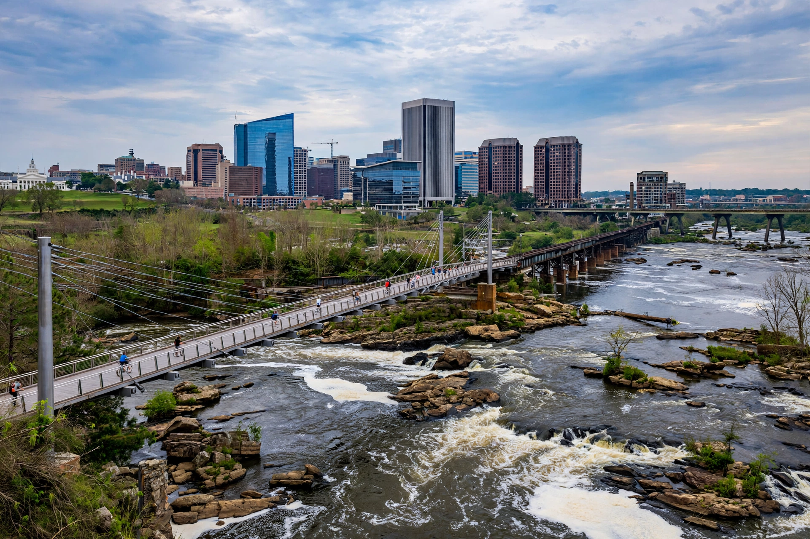

Richmond is the capital city of the Commonwealth of Virginia, United States. An independent city at the fall line of the James River, it was the capital of the Confederate States during most of the American Civil War and is a centre for finance, law, government and higher education.

Settled near the Powhatan chiefdom, Richmond was laid out by William Byrd II and William Mayo in 1737 and became state capital in 1780, when Patrick Henry's earlier "Give me liberty" speech at St. John's Church (1775) had already made it famous. As Confederate capital from 1861, it endured repeated Union campaigns until its fall in April 1865, when retreating fires gutted much of downtown.
Richmond straddles the James River rapids, with neighbourhoods including Shockoe Bottom, Church Hill, Carytown and the Fan District. It hosts the Federal Reserve Bank of Richmond, Fortune 500 firms such as Dominion Energy and Altria historically, Virginia Commonwealth University and the University of Richmond.
Sites include the Virginia State Capitol designed by Thomas Jefferson, Monument Avenue (whose Confederate statues were removed in 2020–21), the American Civil War Museum, and the James River Park System.